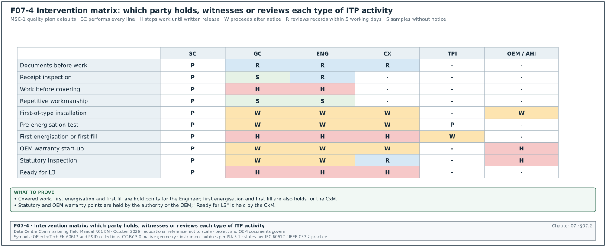
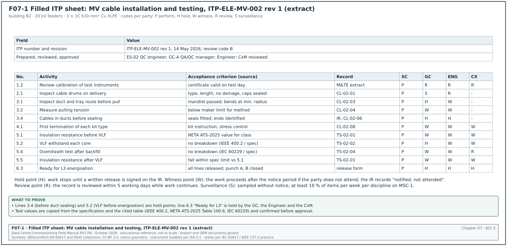
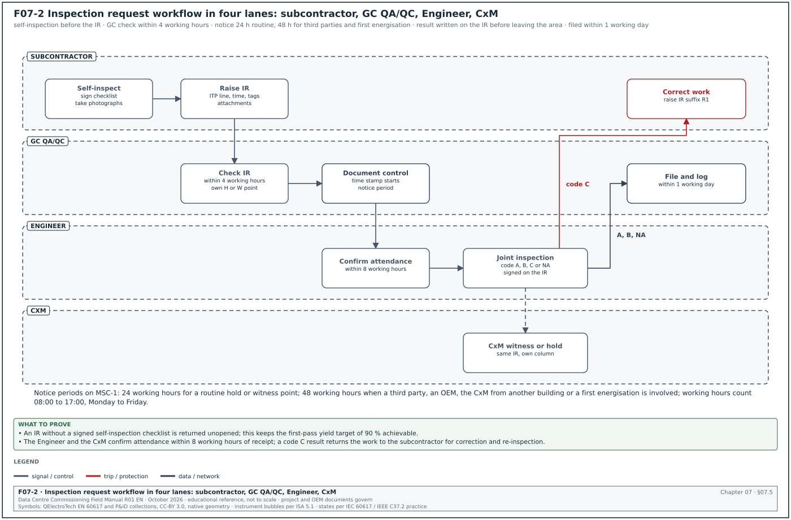
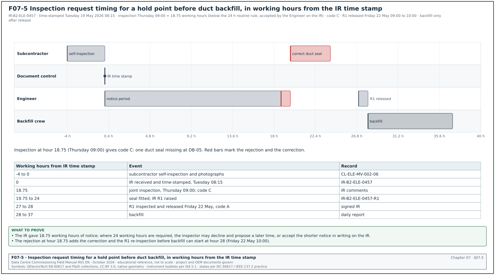
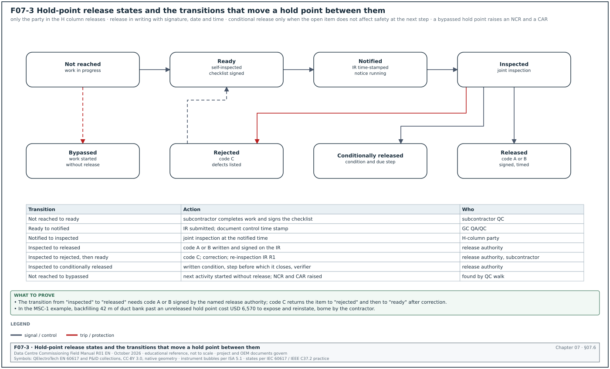
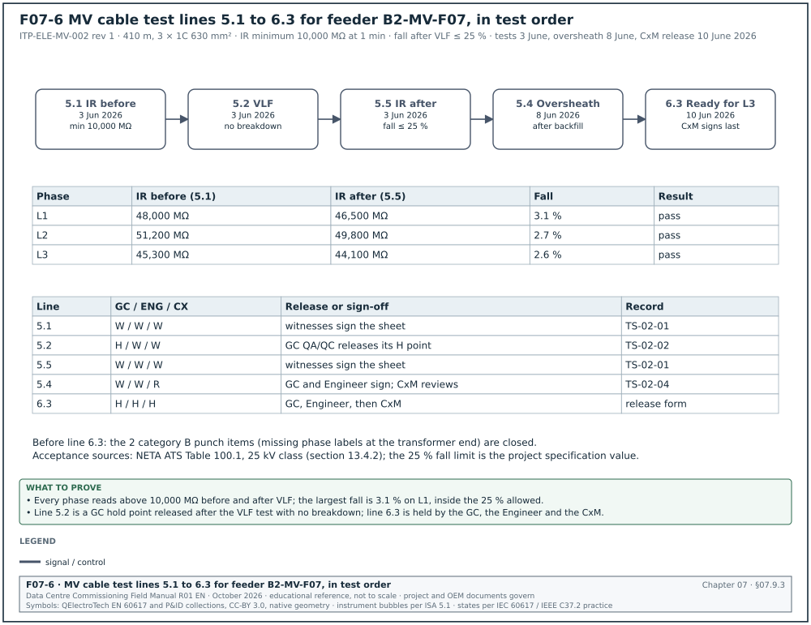
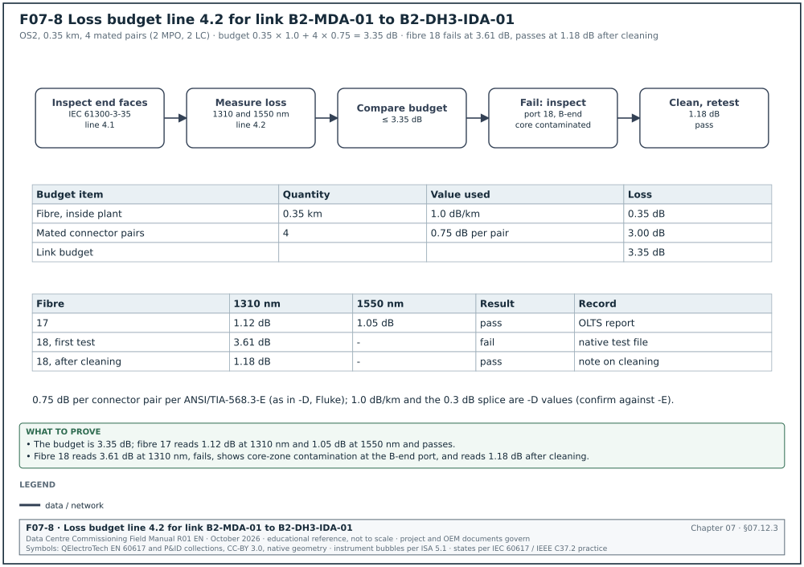
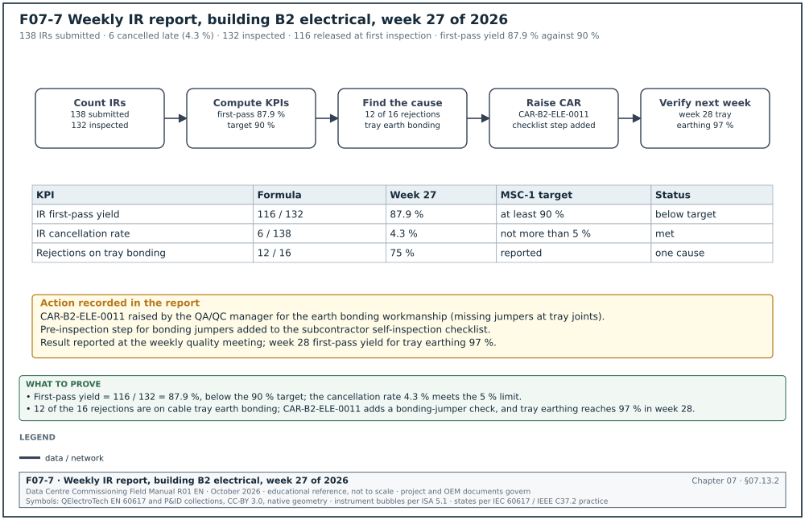

07.0Scope of this chapter
This chapter explains how a data-centre construction project plans, requests, attends, records and releases inspections and tests. It starts with the basics: what an inspection and test plan (ITP) is, why a contract needs one, and what each type of intervention point means. Chapter 08 covers change control. Chapter 09 covers non-conformance reports (NCR), corrective actions, punch lists and defect closure, which start when an inspection under this chapter fails.
- Definitions and purpose. Inspection and test plan, quality plan, method statement, inspection checklist, inspection request (IR), also called work inspection request (WIR) or request for inspection (RFI-I), and how they relate to the five commissioning levels L1 to L5.
- Intervention point types. Hold (H), witness (W), review (R), surveillance (S) and monitor (M) points, what each one obliges each party to do, and what happens when a party does not attend.
- ITP structure. The columns, numbering, revision control, approval route and the ITP register.
- Inspection request process. Form fields, notice periods (typically 24 to 48 hours), response codes, re-inspection and cancellation rules, with a swimlane workflow.
- Hold-point release. Release authority, conditional release, delegation, and the consequences of covering or energising work past an unreleased hold point.
- Instruments and calibration. The measuring and test equipment (M&TE) register and what an inspector checks on a calibration certificate before a test starts.
- Four filled ITPs. Medium-voltage (MV) cable installation, chiller installation, building management system (BMS) panel and fibre backbone.
- Registers, key performance indicators (KPI) and contract notes. IR log fields, first-pass yield, response times, and the clauses in FIDIC 2017, NEC4 ECC, AIA A201-2017, UFGS 01 45 00 and Indonesian public-works practice that give the ITP its contractual force.
Documents and standards used: ISO 9001:2015 clause 8.5.1 (control of production and service provision), ISO 10005:2018 (guidelines for quality plans). The chapter also uses FIDIC Conditions of Contract for Construction (Red Book) and for Plant and Design-Build (Yellow Book), second edition 2017, clauses 4.9, 7.3, 7.4, 7.5 and 7.6. It also uses NEC4 Engineering and Construction Contract (ECC) clauses 40 to 46, AIA A201-2017 sections 12.1 and 13.4, UFGS 01 45 00 Quality Control (August 2023) and CSI MasterFormat sections 01 40 00 and 01 45 00. Further sources are ANSI/NETA ATS-2025, IEEE 400.2, ANSI/TIA-568.3-E (which replaced -D in September 2022), IEC 61300-3-35, ASHRAE Guideline 0-2019, ASHRAE Standard 202-2024 and the MSC-1 case ledger.
07.1What an inspection and test plan is and why it exists
07.1.1Definition
An inspection and test plan (ITP) is a table that lists, in the order of construction, every inspection and test that a defined part of the work must pass. For each line it states the reference document, the acceptance criterion, the record that proves the result, and what each party must do at that line (hold, witness, review or surveillance). One ITP covers one package or one type of work, for example "MV cable installation, 20 kV, building B2".
07.1.2Why a project needs ITPs
A data-centre project has thousands of activities that are covered, energised or filled after they are built. A cable is pulled into a duct and the duct is sealed. A chiller is filled with water and glycol. A BMS panel is powered and its wiring is hidden behind trunking covers. Once an activity is covered or energised, an inspection becomes expensive or unsafe. The ITP sets, before the work starts, the points at which the work stops for inspection.
The ITP has four practical uses on site.
- Plan the inspections. The contractor's quality control (QC) manager and the commissioning manager (CxM) use the ITP to schedule inspectors and witnesses in the three-week look-ahead.
- Protect the owner's right to inspect. Contracts give the Engineer or Architect the right to inspect work before it is covered. The ITP turns that general right into named points with notice periods.
- Set the acceptance values in advance. The acceptance criterion is agreed when the ITP is approved, before anyone sees a test result.
- Build the turnover record. Each ITP line names a record (checklist, test sheet, certificate). At handover the completed ITP is the index to the quality records for that package.
07.1.3ITP, quality plan, method statement and checklist
| Document | What it contains | Who writes it | Approved by | Example reference |
|---|---|---|---|---|
| Project quality plan | how the contractor manages quality on the whole project: organisation, procedures, document control, NCR process, audits | general contractor (GC) quality assurance and quality control (QA/QC) manager | Engineer or construction manager (CM) | PQP-MSC1-001 rev 2 |
| Method statement | how one activity is done safely and correctly: sequence, plant, labour, hazards, controls | subcontractor engineer | Engineer, with health and safety review | MS-ELE-MV-004 cable pulling |
| Inspection and test plan | which inspections and tests the activity passes, acceptance values, records, H/W/R/S points | subcontractor QC engineer | Engineer and CxM | ITP-ELE-MV-002 rev 1 |
| Inspection checklist or test sheet | the form filled on the day: each check, the measured value, pass or fail, signatures | written by the subcontractor, filled by the inspector | signed on the day by the parties named in the ITP | CL-ELE-MV-002-05 |
ISO 10005:2018 gives guidance for quality plans "for any intended output, whether a process, product, service, project or contract". An ITP is the part of a quality plan that covers inspection and testing. ISO 9001:2015 clause 8.5.1 requires production to be carried out under controlled conditions, including "the implementation of monitoring and measurement activities at appropriate stages". An approved ITP is the usual way a construction contractor shows that it meets clause 8.5.1.
07.1.4How the ITP relates to commissioning levels L1 to L5
On hyperscale programmes the usual practice is a five-level commissioning model, L1 to L5, after an L0 design review; the names below follow section 02.3.2. The ITP covers the construction quality activities, which correspond to levels 1 and 2, and it hands over to the commissioning scripts at level 3.
| Level | Name used on the MSC-1 programme | Main document | ITP role |
|---|---|---|---|
| L1 | factory acceptance test (FAT) | FAT procedure | ITP lines for FAT witness (H or W) |
| L2 | delivery and installation inspection (L2A delivery, L2B installation) | delivery checklist, installation checklists, NETA visual and mechanical inspection, pre-energisation tests | receipt inspection (R) and most other ITP lines sit here: hold points before covering, before energising and before filling |
| L3 | start-up and pre-functional checks | start-up checklist, original equipment manufacturer (OEM) start-up report, pre-functional checklist | the last ITP line is "release to L3"; L3 is then run under the Cx script |
| L4 | functional performance test | functional test script | outside the ITP, under the Cx plan |
| L5 | integrated systems test (IST) | IST script | outside the ITP, under the Cx plan |
Check: The last line of every installation ITP should be a hold point named "Ready for L3 start-up", with the CxM as the release authority. Without it, start-up can begin on equipment whose L2 records are still open.
07.1.5Who writes, reviews and uses the ITP
| Role | What the role does with the ITP |
|---|---|
| Subcontractor QC engineer | writes the ITP for the package, attaches checklists, fills records on site |
| GC QA/QC manager | reviews the subcontractor ITP, adds main-contractor points, submits to the Engineer, keeps the ITP register |
| Engineer (FIDIC) or Project Manager and Supervisor (NEC4) or Architect (AIA) | reviews and accepts the ITP, attends hold and witness points, releases hold points |
| Commissioning manager (CxM) or commissioning authority (CxA) | reviews every ITP that feeds commissioning, adds Cx witness points, holds the "Ready for L3" release |
| Designer or engineer of record (EOR) | confirms the acceptance criteria that come from the design (for example a torque, a test pressure, a cable bending radius) |
| Third-party inspector or testing agency | performs or witnesses tests named in the ITP (for example NETA testing, fibre certification) |
| OEM representative | attends OEM-specific points (start-up, factory test, warranty inspections) |
| Authority having jurisdiction | attends statutory points (for example the electrical inspection before the operation-worthiness certificate, Sertifikat Laik Operasi (SLO), in Indonesia) |
07.2Intervention point types: hold, witness, review, surveillance and monitor


07.2.1Definitions
An intervention point is a line in the ITP where a named party has a defined action. The five codes below are the usual set. A project must define them in the quality plan, because some contracts use other letters.
| Code | Name | What the contractor must do | What the named party does | Can work continue without the party |
|---|---|---|---|---|
| H | Hold point | stop the work at this line, give notice by IR, wait for written release | inspects or witnesses, then releases in writing or rejects | no; work beyond the line is at the contractor's risk and may be uncovered at its cost |
| W | Witness point | give notice by IR, perform the activity at the notified time | attends if it chooses | yes, after the notice period expires and the party does not attend; the record states "notified, not attended" |
| R | Review point | submit the record (test sheet, certificate) for review | reviews the document within the agreed time | yes; the work continues, the record is accepted or returned |
| S | Surveillance point | no notice; work proceeds | may inspect at any time without notice, samples the work | yes |
| M | Monitor point | perform and record the activity | checks records during audits or the weekly review | yes |
A hold point stops the work until a written release is received. A witness point does not stop the work. If the notified party does not attend at the notified time, the contractor proceeds and records the absence. This difference decides cost liability when a party misses an inspection, so the ITP must use the codes exactly.
07.2.2How to choose the code for each activity
Use the questions below, in order, when writing or reviewing an ITP line. The first rule that applies sets the code.
- Covered or irreversible work. If the activity becomes impossible to inspect after the next step (cable in a sealed duct, buried earth electrode, concrete pour, insulation over a pipe, pressure test before lagging), make it a hold point for the Engineer.
- First energisation or first fill. If the next step applies voltage, pressure, refrigerant or fuel for the first time, make it a hold point. The release is part of the energisation or fill permit (chapter 10).
- Statutory or OEM warranty condition. If a law, an authority or the OEM warranty requires a named person to be present, make it a hold point for that party. Examples are an OEM start-up engineer, or an Ahli K3 Listrik (electrical occupational safety and health expert) for an electrical installation test.
- Test with an acceptance value that drives later design or commissioning. If the result is a number used later (cable insulation resistance, pipe flushing cleanliness, fibre loss budget), make it a witness point for the CxM at minimum, and a hold point if retesting would be expensive.
- Material receipt and documents. Delivery inspection, material certificates, calibration certificates and test reports are review points.
- Repetitive workmanship. Activities repeated many times with low risk (cable tray supports, labels, containment fixings) are surveillance points, sampled by the inspector.
07.2.3Typical party columns on a data-centre ITP
Each ITP line has one column per party. A typical MSC-1 ITP uses six columns.
| Column | Party | Typical codes used |
|---|---|---|
| SC | subcontractor QC (performs and records) | P (perform) on every line |
| GC | GC QA/QC | H, W, R, S |
| ENG | Engineer or Project Manager's Supervisor | H, W, R |
| CX | commissioning manager or agent | H, W, R |
| TPI | third-party inspector or testing agency | P or W |
| OEM / AHJ | OEM representative or authority having jurisdiction (AHJ) | H or W where required |
07.2.4What each party owes at each code
Figure F07-4 gives the default code for each type of activity and each party, as set in the MSC-1 quality plan.
| Code | Contractor obligation | Inspecting party obligation | Record |
|---|---|---|---|
| H | give IR with notice period; present the work complete and ready; provide access, lighting, instruments and the approved documents; do not proceed | attend at the notified time or agree a new time within the notice period; release or reject in writing on the IR | IR with release signature and date |
| W | give IR with notice period; perform at the notified time | attend or decline in writing | IR with "attended" or "notified, not attended" |
| R | submit record within the agreed time after the activity (for example 2 working days) | review within the agreed time (for example 5 working days) | transmittal and review code |
| S | allow access at any time | sample and record findings | surveillance report |
Common errors:
- Witness treated as hold. The contractor waits for a witness who has declined, and loses a day. Read the code; proceed after the notice period when the code is W.
- Hold treated as witness. The contractor covers a hold-point activity because "nobody came". This is the most expensive ITP error. Covering a hold-point activity without release exposes the contractor to uncovering at its own cost (see 07.6.5).
- Codes without party columns. An ITP with one "H/W" column and no named party does not say who releases. Every code must sit in a named party column.
07.3ITP structure and fields


07.3.1Header block
The header identifies the ITP and its approval. The table lists the fields the MSC-1 programme uses. The example title names cross-linked polyethylene (XLPE) cable.
| Field | Type | Example value |
|---|---|---|
| ITP number | text, unique | ITP-ELE-MV-002 |
| Revision and date | text and date | rev 1, 14 May 2026 |
| Title | text | MV cable installation and testing, 20 kV, 3 × 1C 630 mm² Cu XLPE |
| Project, building, area | text | MSC-1, building B2, MV room to block transformer rooms |
| Specification sections | list | 26 05 13 Medium-voltage cables; 26 08 00 Commissioning of electrical systems |
| Drawings | list | B2-E-MV-101 rev C single-line diagram; B2-E-MV-310 rev B cable route |
| Method statements | list | MS-ELE-MV-004 rev 1 cable pulling; MS-ELE-MV-005 rev 0 terminations |
| Contractor and subcontractor | text | GC, company code GC-A; electrical subcontractor ES-02 |
| Prepared, reviewed, approved | names, roles, dates | prepared ES-02 QC engineer 10 May; reviewed GC-A QA/QC manager 12 May; approved Engineer 14 May; CxM reviewed 14 May |
| Review code | A, B or C | B (approved with comments, comments incorporated in rev 1) |
| Legend | text | P perform, H hold, W witness, R review, S surveillance |
07.3.2Line columns
Each line of the ITP has the columns below. Figure F07-1 shows a filled ITP sheet with these columns.
| Column | Content | Example value |
|---|---|---|
| Line number | stage number and sequence in construction order (section 07.3.4) | 3.2 (stage 3, installation; line 3.2 of the MV cable ITP in section 07.9.2) |
| Activity | the inspection or test, written as a full action | "Measure the pulling tension during the pull and record the maximum value" |
| Reference | the document and clause that requires it | MS-ELE-MV-004 section 6; cable manufacturer installation guide |
| Acceptance criterion | the value or condition that passes, with its source | maximum pulling tension below the value in the cable manufacturer data sheet for 630 mm² Cu with pulling eye |
| Frequency or extent | every item, first item, sample size | every cable pull |
| Verifying document | the record that proves the result | pulling tension record CL-02-04 with dynamometer printout |
| Party columns | P, H, W, R, S per party | SC P, GC W, ENG W, CX R |
| Remarks | interfaces, permits, instruments | dynamometer calibrated within 12 months; permit to work required in live MV room |
07.3.3Rules for writing acceptance criteria
- State a value or a condition. Write "insulation resistance at least the value in Table 100.1 of ANSI/NETA ATS-2025 for the cable voltage class", and never "IR acceptable".
- Name the source of the value. Every number has a source: the specification clause, the standard and table, the OEM manual and page, or the approved drawing.
- Give units and conditions. Pressure in bar(g) at a stated temperature, resistance in MΩ at a stated test voltage and duration, loss in dB at a stated wavelength.
- Use the stricter value. When the specification and a standard give different values for the same quantity, the ITP uses the stricter one unless the Engineer agrees otherwise in writing.
- Avoid "as per specification" alone. Copy the value into the ITP and also cite the clause. The inspector on site does not always have the specification.
07.3.4Numbering and grouping
The MSC-1 programme groups ITP lines into stages that match the sequence of work.
- Stage 1, documents before work. Approved drawings, method statement, material approvals, calibration certificates, operative competence records. Mostly review points.
- Stage 2, receipt and storage. Delivery inspection against the purchase order and approved submittal, storage conditions. Review or surveillance points.
- Stage 3, installation. Workmanship lines in construction order. Hold points before covering.
- Stage 4, testing. Pre-energisation or pre-fill tests with acceptance values. Witness or hold points.
- Stage 5, completion. Labels, as-built mark-ups, record handover, punch list cleared to the agreed category, release to L3. Hold point for the CxM.
07.3.5ITP register fields
The GC QA/QC manager keeps one register of all ITPs. The CxM uses it to check that every system in the commissioning plan has an approved ITP before its work starts.
| Field | Type | Example value |
|---|---|---|
| ITP number | text | ITP-MEC-CH-001 |
| Title | text | chilled-water plant chiller installation |
| Package and subcontractor | text | mechanical package, MS-01 |
| Systems covered (Cx system codes) | list | B2-CHW-CH-01 to B2-CHW-CH-05 |
| Current revision and status | text, code | rev 2, code A approved |
| Date submitted, date returned | dates | 3 March 2026, 13 March 2026 |
| Working days in review | number | 8 |
| Work start date for first activity | date | 20 April 2026 |
| Linked checklists | list | CL-MEC-CH-001-01 to -12 |
| Open comments | number | 0 |
| Superseded revisions | list | rev 0, rev 1 |
07.4ITP submission, review and revision
07.4.1Procedure for submission and approval
Purpose: Obtain an approved ITP before the first activity it covers starts.
Trigger: Award of the subcontract package, or approval of the method statement, whichever is later.
Owner: GC QA/QC manager.
Steps:
- Draft the ITP. The subcontractor QC engineer drafts the ITP from the specification, approved drawings, method statements and OEM installation manuals. Allow 10 working days after the trigger.
- Internal review. The GC QA/QC manager reviews the draft, adds main-contractor points and checks the format. Allow 3 working days.
- Submit by transmittal. Submit to the Engineer through the document control system with the referenced checklists attached. Copy the CxM.
- Engineer and CxM review. The Engineer and the CxM review in parallel and return one consolidated comment sheet. The usual contract period is 10 working days for review.
- Return code. The Engineer returns code A (approved), code B (approved with comments, incorporate and resubmit for record) or code C (rejected, revise and resubmit). Work may start under code A or code B; work may not start under code C.
- Resubmit. The subcontractor incorporates comments and resubmits within 5 working days for code B and code C.
- Issue for use. Document control stamps the approved ITP "issued for construction" and distributes it to the site team and the inspectors. The superseded revision is withdrawn from site.
Acceptance: The ITP has code A or B, all party columns filled, every acceptance criterion with a value and a source, and every checklist attached.
Records: Transmittal, comment sheet, approved ITP with stamp, ITP register entry.
07.4.2What the CxM checks during ITP review
- Coverage of commissioning prerequisites. Every L2 check listed in the Cx plan for the system appears as an ITP line. For an MV cable the Cx plan expects insulation resistance, very low frequency (VLF) withstand, partial discharge and sheath test results before L3.
- Correct hold points. Hold points exist before covering, before energisation and before filling, and the last line is "Ready for L3".
- Acceptance values match the Cx scripts. The value in the ITP equals the value the L3 script will read. A different value creates two records that disagree.
- Instrument requirements. Each test line names the instrument type, its accuracy and the calibration interval.
- Records match the turnover index. Each verifying document has a reference that the turnover package index uses (chapter 12).
- Interfaces. Lines that depend on another contractor name that contractor and the record that proves the interface is ready. Examples are a duct installed by the civil contractor and a power supply for a BMS panel from the electrical contractor.
07.4.3Revision control
An ITP is revised when the specification, the drawings, the method or the acceptance value changes. A revision follows the same route as the first submission. Two rules apply on site.
- One revision in use. Only the latest approved revision is on site. Checklists filled under an older revision stay valid for the work done at that time; work after the revision date follows the new revision.
- Revision triggered by a change. When a variation or a design change notice changes an acceptance value (chapter 08), the ITP revision is part of implementing the change. The change is not closed until the ITP revision is approved.
Example: A design change notice raises the chiller supply water temperature set point. The chiller ITP line for the OEM start-up record changes its acceptance value. The ITP goes from rev 1 to rev 2 within 5 working days of the change approval. The rev 1 checklists already signed for chillers 1 and 2 remain valid for the installation lines.
07.5Inspection requests: the process from notice to record




07.5.1What an inspection request is
An inspection request (IR) is the written notice from the contractor to the inspecting parties that a defined piece of work has reached an ITP intervention point. The IR states the time and place at which the work is ready for inspection. Projects use several names: inspection request (IR), work inspection request (WIR), request for inspection (RFI or RFI-I) and, in Indonesian practice, "permintaan pemeriksaan" or "request" (form name varies). This manual uses IR. An IR is different from a request for information (RFI), which asks the designer a question.
The IR exists for three reasons. It gives the inspecting party the notice that the contract requires. It fixes the time and place, so absence can be proven. It is the record on which the release, the rejection or the "not attended" statement is written.
07.5.2IR form fields
| Field | Type | Example value |
|---|---|---|
| IR number | text, unique | IR-B2-ELE-0457 |
| ITP number, revision and line | text | ITP-ELE-MV-002 rev 1, line 3.6 |
| Intervention code per party | text | ENG H, CX W, GC H |
| Work description | text | cable route B2-MV-F07, duct bank section DB-03 to DB-05, cables in ducts before duct sealing and backfill |
| Location and grid | text | B2 external, grid C4 to C9 |
| System and asset tags | list | B2-MV-F07-L1, -L2, -L3 |
| Date and time requested | date, time | 21 May 2026, 09:00 |
| Date and time submitted | date, time | 19 May 2026, 08:15 |
| Notice period given (working hours) | number | 18.75 (48.75 calendar hours); below the 24-hour rule, accepted by the Engineer on the IR |
| Contractor self-inspection completed | yes or no, signature | yes, ES-02 QC engineer, 18 May 2026 |
| Attachments | list | checklist CL-ELE-MV-002-06 filled by the subcontractor, photos 1 to 12, approved drawing extract |
| Permits required | list | none (external civil area) |
| Instruments and calibration | list | none for this line |
| Response code | code | see 07.5.4 |
| Inspector comments | text | ducts sealed at DB-03 side with approved seal, DB-05 side open; cable spacing as drawing |
| Release or rejection signature | name, role, date, time | Engineer's representative, 21 May 2026, 09:40 |
| Re-inspection IR number | text | blank, or IR-B2-ELE-0457-R1 |
07.5.3Notice periods
Notice periods are set by the contract, the specification or the quality plan: contract governs; typical 24 hours for a routine IR. Where the contract does not set one, the MSC-1 quality plan uses the values below. They follow common practice on large projects, where 24 to 48 hours of notice is usual.
| Inspection type | Minimum notice | Reason |
|---|---|---|
| Routine hold or witness point on site | 24 hours, within working hours | allows the inspector to plan the day |
| Hold point that needs a third party, OEM or the CxM from another building | 48 hours | travel and coordination |
| Hold point before energisation or first fill | 48 hours, and the energisation permit request at the same time | permit and switching programme preparation (chapter 10) |
| Factory acceptance test outside Indonesia | 15 working days | visas, flights, test procedure review |
| Factory acceptance test in Indonesia | 5 working days | travel and procedure review |
| Authority inspection | as the authority requires; book at least 10 working days ahead | authority calendars |
Check: UFGS 01 45 00, used on United States federal projects, requires notice to the Contracting Officer "at least 2 business days in advance of each preparatory phase meeting" and each initial phase. This is a published example of a two-working-day rule that a project specification can adopt.
Notice periods count from the time the IR is received in the document control system. Figure F07-5 shows the timing of one IR for a hold point before duct backfill, including a rejection and a re-inspection. An IR submitted at 17:30 on a Friday for an inspection at 08:00 on Monday gives no working-hours notice under a 24-hour rule that counts working hours only. The quality plan must state whether notice counts calendar hours or working hours; the MSC-1 quality plan counts working hours between 08:00 and 17:00, Monday to Friday.
07.5.4IR response codes
| Code | Meaning | What happens next |
|---|---|---|
| A, released | the work meets the acceptance criteria; for a hold point the work may proceed | contractor proceeds; IR closed |
| B, released with comments | the work meets the criteria; minor items to correct that do not affect the next step | contractor proceeds; items entered on the punch list (chapter 09) with category C |
| C, rejected | the work does not meet the criteria | contractor corrects and submits a re-inspection IR; if the defect is a nonconformity, an NCR is raised |
| NA, not attended | witness point; party notified and did not attend | contractor proceeds; record states the IR number and notice given |
| X, cancelled | contractor cancelled before the inspection, or the work was not ready on arrival | counts as a failed IR in the KPI unless cancelled at least 4 working hours before the time |
07.5.5IR workflow with roles and time limits
Figure F07-2 shows the IR workflow as a swimlane with the subcontractor, the GC QA/QC, the Engineer and the CxM.
Purpose: Inspect each ITP intervention point at the notified time and record the result.
Trigger: The subcontractor completes the work up to an ITP line coded H or W for any party.
Owner: GC QA/QC manager.
Steps:
- Self-inspect first. The subcontractor QC engineer inspects the work against the checklist and signs it. An IR without a signed self-inspection is returned unopened.
- Prepare the IR. The subcontractor fills the IR fields in 07.5.2, attaches the signed checklist, photographs and drawing extract, and sends it to the GC QA/QC.
- GC check. The GC QA/QC checks the IR within 4 working hours and inspects the work for its own H or W point. It then forwards the IR to the Engineer and the CxM through document control.
- Notice runs. The notice period starts at the document control time stamp. The Engineer and the CxM confirm attendance or propose a new time within 8 working hours of receipt.
- Joint inspection. At the notified time the parties inspect the work with the checklist. The subcontractor provides access, lighting, the approved drawings and the instruments.
- Record the result. The inspector writes the response code, comments and signature on the IR before leaving the area. For a rejection, the inspector lists each defect with its location.
- Release or correct. Code A or B releases the work. Code C sends the work back to the subcontractor for correction. The subcontractor submits a re-inspection IR with suffix R1, R2 and so on.
- Close and file. Document control files the signed IR with the checklist within 1 working day and updates the IR log.
Acceptance: Every H line on the ITP has a released IR before the next activity starts. Every W line has an IR with code A, B or NA.
Records: IR log, signed IR, signed checklist, photographs.
Common errors:
- IR raised before work is ready. The inspector arrives and finds the work incomplete. Count the IR as failed. Prevent this by requiring the self-inspection signature and photographs taken no more than 4 working hours before submission.
- One IR for a whole floor. A single IR for "all cable tray level 2" cannot be closed until every section is ready, and a rejection of one section holds the whole floor. Raise IRs per defined section, for example per grid bay or per tray run.
- Verbal release. The inspector says "go ahead" and leaves. A hold point is released only in writing on the IR. If the inspector cannot sign on the spot, the release is sent by the document control system the same day.
07.5.6Re-inspection rules
- Same scope. A re-inspection IR covers the rejected items and any work disturbed by the correction.
- Notice period. The re-inspection needs the same notice as the original unless the inspector agrees a shorter time on the original IR.
- Cost of re-inspection. Many contracts allow the owner to recover the cost of repeated inspections from the contractor. AIA A201-2017 section 13.4.3 puts "all costs made necessary by such failure, including those of repeated procedures" at the contractor's expense. FIDIC 2017 sub-clause 7.5 allows the Employer to recover the costs of repeated tests after a rejection (confirm the wording against FIDIC 2017 Sub-Clause 7.5 and the Particular Conditions of the contract in use).
- Second rejection. A second rejection of the same item raises an NCR (chapter 09) if one is not already open, and the GC QA/QC manager attends the next re-inspection.
07.5.7IR log fields
| Field | Type | Example value |
|---|---|---|
| IR number | text | IR-B2-ELE-0457 |
| ITP line | text | ITP-ELE-MV-002 line 3.6 |
| Discipline | code | ELE |
| Date submitted | date and time | 19 May 2026, 08:15 |
| Inspection date | date and time | 21 May 2026, 09:00 |
| Notice period (working hours) | number | 18.75 |
| Response code | code | C |
| Days from submission to response | number | 2 |
| Re-inspection IR | text | IR-B2-ELE-0457-R1 |
| Final release date | date | 22 May 2026 |
| Linked NCR | text | none |
| Inspector | name, role | Engineer's representative, electrical |
| Status | open, closed | closed |
07.6Hold-point release


07.6.1States of a hold point
A hold point passes through a fixed set of states. Figure F07-3 shows them as a state diagram.
| State | Meaning | Who moves it to the next state |
|---|---|---|
| Not reached | the work before the hold point is in progress | subcontractor, by completing the work |
| Ready, self-inspected | the subcontractor has inspected and signed the checklist | subcontractor, by raising the IR |
| Notified | IR submitted, notice period running | document control time stamp |
| Inspected | joint inspection done | inspector, by writing the response |
| Rejected | code C | subcontractor, by correcting and raising a re-inspection IR |
| Released | code A or B, signed | inspector; the next activity may start |
| Conditionally released | released with a written condition that must be met before a stated later step | inspector; the condition is tracked to closure |
| Bypassed | the next activity started without release | nobody; it is a nonconformity and an NCR is raised |
07.6.2Release authority
Only the party named in the H column can release that hold point. The quality plan lists the named individuals for each party and discipline, with their signatures. A hold point with H in two columns, for example ENG and CX, needs both releases.
| Hold point type | Usual release authority on MSC-1 | Delegation allowed |
|---|---|---|
| Before covering (ducts, buried earth, concealed pipework) | Engineer's discipline inspector | yes, to a named assistant inspector listed in the quality plan |
| Before first energisation | Engineer and CxM together, with the energisation permit | no |
| Before first fill of a liquid system | Engineer and CxM | no |
| OEM warranty point (start-up) | OEM start-up engineer | no |
| Ready for L3 | CxM | yes, to the building Cx lead |
| Statutory inspection | authority inspector | no |
07.6.3Conditional release
A conditional release lets work continue past a hold point while one item is still open, on condition that the item is closed before a stated later step. Use it only when the open item does not affect the next step and can still be inspected later.
Example: A chiller passes the pressure test hold point, but the pressure gauge calibration certificate on site has expired by 3 days and the replacement certificate is in transit. The Engineer releases the pressure test result on condition that the valid certificate is received before the chiller is filled with glycol. The condition is written on the IR and entered on the ITP as an open item. If the certificate shows the gauge out of tolerance, the test is repeated.
Rules for conditional release:
- Write the condition. The condition, the step before which it must be met, and the person who verifies it are written on the IR.
- Track the condition. The QA/QC manager enters the condition in the IR log with a due date.
- Never for safety. A condition that affects safety at the next step (for example an open earth connection before energisation) is never accepted. The hold stays in place.
07.6.4Procedure to release a hold point
Purpose: Release a hold point in writing when the work meets the acceptance criteria.
Trigger: An IR for a hold-point line reaches its inspection time.
Owner: The party named in the H column.
Steps:
- Confirm the IR is valid. Check that the ITP revision is current, the self-inspection is signed and the notice period was met.
- Confirm the prerequisites. Check that all earlier hold points on the ITP for the same item are released, and that the instruments named for the line have valid calibration certificates.
- Inspect or witness. Inspect the work with the checklist. For a test, read the instrument display and write the value yourself.
- Compare with the criterion. Compare each value with the acceptance criterion in the ITP. A value equal to the limit passes only if the criterion says "at least" or "not more than".
- Decide. Write code A, B or C. For code B, list the comments and their punch category. For code C, list each defect with its location.
- Sign and time. Sign, date and time the IR in the area. A release by message is valid only if the quality plan allows it and the message is attached to the IR the same day.
- Mark the work. For covered work, the subcontractor marks the released section so that later teams can see which section is released. An example is a tag on the duct end with the IR number.
Acceptance: The IR shows code A or B with the release authority's signature, date and time.
Records: Signed IR, checklist, test sheet, photographs, released-section tag numbers.
07.6.5Consequences of missing a hold point
The contracts give the owner remedies.
- Uncovering at the contractor's cost. AIA A201-2017 section 12.1.1 states that work covered "contrary to the Architect's request or to requirements specifically expressed in the Contract Documents" must be uncovered for examination "and be replaced at the Contractor's expense without change in the Contract Time". Section 12.1.2 covers work that was not specifically requested for examination. If such work is uncovered and found to conform, the contractor is entitled to an equitable adjustment; if it does not conform, the contractor pays.
- FIDIC 2017. Sub-clause 7.3 gives the Engineer the opportunity to examine work before it is covered and requires the Contractor to give notice when work is ready. If the Contractor fails to give notice, the Contractor must uncover the work and reinstate it at its own cost when the Engineer requires (confirm the wording against FIDIC 2017 Sub-Clause 7.3 and the Particular Conditions).
- NEC4 ECC. Clause 41 covers tests and inspections. Clause 41 sets cost consequences for two cases. The first is a test or inspection that the Contractor does not allow the Supervisor to attend. The second is a test or inspection repeated after a defect is found (clause 41 is Tests and inspections in the CECA NEC4 ECC user guide, Bulletin 52 of April 2025; confirm the cost wording against NEC4 ECC clause 41.6).
- Retest. Some work cannot be uncovered, for example a cable that is already terminated and energised. The Engineer may then require additional tests at the contractor's cost that prove the condition indirectly. For an MV cable whose duct installation was not inspected, these are a sheath test and a partial discharge test.
- Nonconformity record. A bypassed hold point is itself a nonconformity of the process. The QA/QC manager raises an NCR with category "process", even when the work turns out to be correct, and a corrective action request (CAR) to stop it recurring (chapter 09).
Worked example: In the MSC-1 worked example, the electrical subcontractor backfills duct bank section DB-05 to DB-07 for MV feeder B2-MV-F09 on 26 May 2026 without a released IR. The reason given is that the excavator was booked for that day. The Engineer's inspector finds the backfill on 27 May. The Engineer instructs the contractor to expose the 42 m section. Excavation and reinstatement take 2 working days with a crew of 6 and one excavator. The example rates are USD 45 per labour hour and USD 95 per excavator hour, for 9-hour days. The cost is 2 × 9 × (6 × 45 + 95) = USD 6,570, borne by the contractor. The exposed ducts show one duct joint not sealed, which is corrected before backfill under IR-B2-ELE-0498. The QA/QC manager raises NCR-B2-ELE-0031 (process, hold point bypassed) and CAR-B2-ELE-0007 requiring the excavator booking to be linked to the released IR in the daily plan.
07.7Witness points and review points in practice
07.7.1Witness point when the party does not attend
- Notice given. The contractor gave the IR with the notice period.
- Time passes. The party did not attend within 30 minutes of the notified time and did not propose another time within the response period in 07.5.5 step 4.
- Proceed and record. The contractor tests, writes "notified, not attended" on the IR with the IR number and the time, and files the result.
- Deemed attendance. FIDIC 2017 sub-clause 7.4 treats tests as made in the Engineer's presence when the Engineer does not attend at the agreed time and place, unless the Engineer instructs otherwise (confirm the wording against FIDIC 2017 Sub-Clause 7.4 and the notice period in the Particular Conditions).
- Owner may still review. The witness party may review the result and may require a repeat test only if it has a reason to doubt the result. Under most contracts the owner pays for a repeat test that passes.
07.7.2Review point timing
- Contractor submits. The contractor submits the record within 2 working days after the activity.
- Reviewer returns. The reviewer returns the record with code A, B or C within 5 working days.
- Work continues. Work continues during the review. If the review finds a failed value, the item is treated as a failed inspection and an NCR is raised.
- Deemed acceptance. Do not assume that silence means acceptance. The quality plan states whether a record not returned in 5 working days is deemed accepted. On MSC-1 it is not deemed accepted; the QA/QC manager escalates at the weekly quality meeting.
07.7.3Surveillance
Surveillance is sampling by the inspector without notice. The inspector records each surveillance visit in a surveillance report with the date, area, ITP lines observed, number of items sampled, number of findings and the punch or NCR references raised. On MSC-1 the Engineer's inspectors sample at least 10 % of surveillance-coded items per week per discipline. The sample is increased to 25 % for any discipline with more than 2 NCRs in the previous 4 weeks.
07.8Instruments and calibration control in ITPs
07.8.1Measuring and test equipment register
Every instrument used for an ITP test is listed in the contractor's M&TE register. The inspector checks the register entry and the certificate before the test starts.
| Field | Type | Example value |
|---|---|---|
| Instrument ID | text | ES02-IRT-014 |
| Type | text | 5 kV insulation resistance tester |
| Make and model | text | as the calibration certificate |
| Serial number | text | as the label on the instrument |
| Range and accuracy | text | 0.5 kV to 5 kV DC; resistance accuracy as the manufacturer data sheet |
| Calibration laboratory | text | laboratory accredited to ISO/IEC 17025 by Komite Akreditasi Nasional (KAN) or another signatory of the ILAC arrangement |
| Certificate number | text | CAL-2026-03-1177 |
| Calibration date and due date | dates | 12 March 2026; 11 March 2027 |
| Calibration interval | months | 12 |
| As-found result | in or out of tolerance | in tolerance |
| Status label on instrument | text | green label, due 11 March 2027 |
07.8.2Checks before each test
- Identity. The serial number on the instrument matches the certificate.
- Date. The test date is before the due date. An instrument that falls due during a test campaign is replaced before the due date.
- Range. The applied value and the expected reading sit inside the calibrated range.
- As-found result. If the last calibration found the instrument out of tolerance, every test since the previous calibration is reviewed. The QA/QC manager lists the affected tests and the Engineer decides which tests are repeated.
- Leads and accessories. Test leads, clamps, pressure hoses and fibre test reference cords are in good condition. Fibre reference cords are inspected and cleaned before the reference is set.
07.8.3Calibration intervals used on MSC-1
The table gives the intervals in the MSC-1 quality plan. They are common practice; the OEM manual or the project specification may require shorter intervals.
| Instrument | Interval | Field check before use |
|---|---|---|
| Insulation resistance tester | 12 months | check on a known resistor box or open and short test |
| VLF test set and partial discharge (PD) system | 12 months | PD calibration pulse injected at the cable end before each test |
| Torque wrench | 12 months or 5,000 cycles, whichever first | check on a torque tester weekly during busway work |
| Pressure gauge for pressure tests | 12 months | compare with a second calibrated gauge at test start |
| Dynamometer for cable pulling | 12 months | zero check |
| Optical loss test set (OLTS) and optical time-domain reflectometer (OTDR) | 12 months | reference set with test reference cords at the start of each day |
| Fibre end-face inspection probe | as OEM | focus and pass or fail analysis software version recorded |
| Multimeter, clamp meter | 12 months | check on a known source |
07.9Filled ITP: MV cable installation and testing
07.9.1Scope of the example ITP
In the MSC-1 worked example, ITP-ELE-MV-002 rev 1 covers the 20 kV feeders from the building B2 MV switchboard to the block transformers. Each feeder is three single-core 630 mm² copper conductors with cross-linked polyethylene (XLPE) insulation, laid in ducts outside the building and on ladder tray inside. Terminations are heat-shrink or cold-shrink outdoor and indoor kits from the approved termination supplier. Chapter 13 gives the full MV cable test procedures; this ITP shows how those tests sit in the quality sequence.
The test voltages and durations depend on the cable rating and the standard the specification cites. The ITP copies the value from the specification and names the table. The entries below show the format; confirm each test value against the current edition of IEEE 400.2, ANSI/NETA ATS-2025 Table 100.6 and the cable manufacturer before the ITP is approved.
07.9.2ITP lines
| No. | Activity | Acceptance criterion (source) | Record | GC / ENG / CX | Notes |
|---|---|---|---|---|---|
| 1.1 | Review approved cable and termination submittals | approved code A or B (spec 26 05 13) | transmittal | R / R / R | before any delivery |
| 1.2 | Review calibration of IR tester, VLF set, PD system, dynamometer | certificate valid on test day (quality plan 7.8) | M&TE register extract | R / R / R | ISO/IEC 17025 laboratory |
| 1.3 | Review jointer competence records | certificate for the approved kit type (spec 26 05 13) | competence register | R / R / - | named jointers only |
| 2.1 | Inspect cable drums on delivery | drum number, length, type match the order; no damage; end caps sealed | delivery checklist CL-02-01 | S / R / - | photograph each drum label |
| 2.2 | Review routine test certificates from the factory | certificate per drum to IEC 60502-2 routine tests | factory certificate | R / R / R | file with the drum number |
| 3.1 | Inspect duct and tray route before pulling | ducts proven clear with a mandrel; tray complete, earthed, bends at the cable's minimum radius | route checklist CL-02-03 | H / W / - | interface: civil contractor ducts |
| 3.2 | Measure pulling tension during each pull | maximum below the manufacturer limit for the pulling method | tension record CL-02-04 | W / W / - | dynamometer printout |
| 3.3 | Check bending radius and cable spacing as laid | not less than the manufacturer installation radius; trefoil spacing as drawing B2-E-MV-310 | installation checklist CL-02-05 | S / S / - | measure at every bend |
| 3.4 | Inspect cables in ducts before duct sealing and backfill | duct seals fitted; cables identified at both ends | IR and CL-02-06 | H / H / - | hold point before covering |
| 3.5 | Inspect cable cleats and fixings on tray | cleat type and spacing as the short-circuit calculation | CL-02-07 | S / W / - | spacing from the design |
| 4.1 | Witness termination of first kit of each type | kit installed to the kit manufacturer instruction; stress control positioned as instruction | termination record CL-02-08 | W / W / W | first-of-type witness |
| 4.2 | Inspect all terminations | as 4.1; lugs crimped with the approved die; torque on bolted lugs as the switchgear OEM | CL-02-08 | S / S / - | torque values on the sheet |
| 5.1 | Measure insulation resistance of each core before VLF | at least the value in NETA ATS-2025 for the voltage class; record values at 1 min | test sheet TS-02-01 | W / W / W | test voltage per specification |
| 5.2 | Run the VLF withstand test on each core | no breakdown at the test voltage and duration in IEEE 400.2 / specification | TS-02-02 | H / W / W | hold point before energisation |
| 5.3 | Measure PD where specified | PD level below the specification limit; no PD sources located in terminations | TS-02-03 | W / W / W | calibration pulse first |
| 5.4 | Run the oversheath test | no breakdown at the test voltage in IEC 60229 / specification | TS-02-04 | W / W / R | after backfill |
| 5.5 | Measure insulation resistance after VLF | value not lower than in 5.1 by more than the specification allows | TS-02-01 | W / W / W | compare with 5.1 |
| 6.1 | Check phase identification and labels | labels at both ends as the cable schedule; phase colours as drawing | CL-02-09 | S / S / R | both ends |
| 6.2 | Submit marked-up as-built route and record set | complete set to the turnover index | record set | R / R / R | chapter 12 |
| 6.3 | Ready for L3 energisation | all lines above released or accepted; punch A and B items closed | release form | H / H / H | CxM signs last |
07.9.3Worked example of five test lines
Figure F07-6 shows the five test lines for feeder B2-MV-F07 in their order, with the dates, the values for each phase and the party that releases each line.


Worked example: In the MSC-1 worked example, feeder B2-MV-F07 (length 410 m) is tested on 3 June 2026 to the NETA Acceptance Testing Specifications (ATS). The acceptance values written in the ITP are 10,000 MΩ minimum insulation resistance at 1 minute (NETA ATS Table 100.1, 25 kV class, as in section 13.4.2; confirm against ANSI/NETA ATS-2025 Table 100.1 and the project specification) and a fall of not more than 25 % after the VLF test (project specification value).
| Phase | Line 5.1, IR before VLF | Line 5.5, IR after VLF | Fall | Result |
|---|---|---|---|---|
| L1 | 48,000 MΩ | 46,500 MΩ | 3.1 % | pass |
| L2 | 51,200 MΩ | 49,800 MΩ | 2.7 % | pass |
| L3 | 45,300 MΩ | 44,100 MΩ | 2.6 % | pass |
- Line 5.1. Each phase reads more than 10,000 MΩ at 1 minute, so the line passes. The lowest reading is 45,300 MΩ on phase L3.
- Line 5.2. The VLF test runs at the voltage and duration written in the ITP from the specification. The test set records no breakdown, and the leakage trend stays flat. The Engineer's representative attends under the W code and signs TS-02-02. The GC QA/QC then releases its H point.
- Line 5.5. The largest fall after VLF is 3.1 % on phase L1, inside the 25 % allowed, so the line passes.
- Line 5.4. The oversheath test after backfill passes on 8 June 2026.
- Line 6.3. The CxM signs "Ready for L3" on 10 June 2026, after the closure of 2 category B punch items (missing phase labels at the transformer end).
07.9.4Common errors on MV cable ITPs
- Test value missing. The line says "VLF as specification". The jointer or tester uses a value from a previous project. Copy the value and duration into the ITP line.
- No baseline insulation resistance. Line 5.5 cannot be judged without line 5.1. Insist on both.
- Oversheath test before backfill only. Backfill can damage the oversheath. Test after backfill.
- First-of-type termination not witnessed. Errors in the stress-control position repeat on every kit. Witness the first kit of each type and each jointer.
07.10Filled ITP: chiller installation
07.10.1Scope of the example ITP
ITP-MEC-CH-001 rev 2 covers the five water-cooled chillers B2-CHW-CH-01 to -05 of the building B2 chilled-water plant. In the MSC-1 worked example this plant serves the air halls on the cold loop at 18 °C supply and 24 °C return. The plant has 5 chillers of 2.5 MW (4 duty and 1 standby). The chiller size is an example value, the same as in sections 03.9.3 and 12.3; chapter 18 sizes the separate warm-loop trim chiller plant. The ITP ends at "Ready for OEM start-up and L3". Chapter 18 gives the chiller commissioning procedures.
07.10.2ITP lines
| No. | Activity | Acceptance criterion (source) | Record | GC / ENG / CX | Notes |
|---|---|---|---|---|---|
| 1.1 | Review approved chiller submittal and OEM installation manual | code A or B; manual revision recorded | transmittal | R / R / R | |
| 1.2 | Witness factory performance test (one unit per type) | capacity and efficiency within the tolerance in the specification and the AHRI 550/590 rating basis | FAT report | W / W / W | 15 working days notice |
| 2.1 | Inspect each chiller on delivery | no transport damage; holding charge pressure above the OEM minimum on the gauge; shock indicators intact | delivery checklist | R / R / S | photograph gauges |
| 3.1 | Inspect plinth and supports before setting | level within the OEM tolerance; anti-vibration mounts as approved; clearances as OEM | CL-CH-03 | H / W / - | interface: structural steel |
| 3.2 | Inspect pipe connections before insulation | flexible connectors fitted; no strain on chiller nozzles; strainers with the specified mesh | CL-CH-04 | H / W / - | hold before insulation |
| 3.3 | Witness hydrostatic pressure test of connected pipework | test pressure and hold time from the specification, with no pressure drop and no leaks (ASME B31.9 para. 937 leak test basis; confirm the test pressure and hold time against the current edition of ASME B31.9) | pressure test certificate | H / W / W | chiller isolated if OEM requires |
| 3.4 | Witness flushing and cleaning of chilled water circuit | flushing velocity and water quality as the flushing specification (BSRIA BG 29 basis) | flushing record | W / W / W | chiller bypassed during flush |
| 4.1 | Inspect power cable terminations and earthing | torque to OEM; earth bond continuity as specification | CL-CH-05 | S / S / - | |
| 4.2 | Measure insulation resistance of compressor and fan motors | at least the value in the OEM manual | test sheet | W / R / R | before first energisation |
| 4.3 | Check phase rotation at the chiller isolator | rotation as the OEM label | CL-CH-05 | W / - / R | |
| 5.1 | Inspect controls wiring and BMS interface cable | as the BMS interface drawing; network address label fitted | CL-CH-06 | S / - / R | interface: BMS contractor |
| 5.2 | Check refrigerant leak test before start-up | no leak detected with an electronic detector at the sensitivity in the OEM manual | OEM leak check sheet | W / - / W | OEM start-up engineer performs |
| 6.1 | Ready for OEM start-up and L3 | all lines released; water quality report accepted; power available on permanent supply | release form | H / H / H | OEM start-up then L3 |
07.10.3Worked example of the pressure test line
Worked example: In the MSC-1 worked example, the project specification sets the chilled water pipework test at 1.5 times the design pressure of 10 bar(g). The test is 15 bar(g) for 2 hours with no drop in pressure. The chiller OEM manual limits the evaporator to its own test pressure, so the chiller is isolated with blank flanges and the test covers the connected pipework only. Two calibrated gauges are fitted: gauge ME02-PG-031 at the high point and ME02-PG-032 at the low point, both with valid certificates. The test starts at 09:10 on 15 July 2026 at 15.0 bar(g). At 11:10 both gauges read 15.0 bar(g); ambient temperature changed from 29 °C to 32 °C, which the inspector records. No leaks are found at the 46 flanged joints inspected. The Engineer witnesses and the GC QA/QC releases the hold point on IR-B2-MEC-0212. The blank flanges are removed under the permit to work and the removal is recorded on the same IR before line 3.4 starts.
07.10.4Common errors on chiller ITPs
- Chiller included in the pipe test. Exceeding the OEM evaporator test pressure can void the warranty. Read the OEM limit and isolate the chiller when the pipe test pressure is higher.
- Strainer mesh not checked. A coarse temporary strainer left in after flushing protects nothing; a fine one left in blocks flow at start-up. Record the mesh installed and its removal or replacement on the flushing record.
- Holding charge not recorded on delivery. A chiller that arrives with zero holding charge may have a leak or moisture ingress. Record the gauge value on delivery and raise an NCR if it is below the OEM minimum.
07.11Filled ITP: BMS control panel
07.11.1Scope of the example ITP
ITP-BMS-CP-003 rev 1 covers the direct digital control (DDC) panels B2-DH3-BMS-CP-01 to -08 in data hall 3. Each panel has one BACnet/IP controller, input and output modules, a 24 V DC power supply and a network switch port. The power supply is fed from a 230 V supply backed by the uninterruptible power supply (UPS). Chapter 22 gives the BMS commissioning procedure.
07.11.2ITP lines
| No. | Activity | Acceptance criterion (source) | Record | GC / ENG / CX | Notes |
|---|---|---|---|---|---|
| 1.1 | Review panel drawings, points list and controller firmware version | approved code A or B; firmware version stated | transmittal | R / R / R | firmware becomes the baseline |
| 1.2 | Witness factory acceptance test of the first panel | wiring as drawing; 100 % of I/O simulated and read at the controller; power supply output in tolerance | FAT record | W / W / W | integrator workshop |
| 2.1 | Inspect panels on delivery | no damage; panel serial and tag as schedule | delivery checklist | S / R / - | |
| 3.1 | Inspect panel mounting and cable entries | fixed as drawing; glands sealed; ingress protection rating as specification | CL-CP-03 | S / S / - | |
| 3.2 | Measure earth continuity from panel earth bar to the building earth | value as specification (example: not more than 0.1 Ω, as for the main earthing terminal (MET) to protective earth (PE) bar bond in 17.5.2) | CL-CP-04 | W / - / R | confirm the value in the specification |
| 3.3 | Inspect field wiring terminations | ferrules fitted; wire numbers as drawing; screens earthed at one end as drawing | CL-CP-05 | S / S / - | |
| 4.1 | Measure supply voltage at the panel and at the 24 V DC output | 230 V within the specification tolerance; 24 V DC within the power supply data sheet tolerance | CL-CP-06 | W / - / W | supply from UPS-backed board |
| 4.2 | Check controller firmware and configuration file | firmware equals the approved version; BACnet device instance unique and as the address schedule | CL-CP-07 | W / - / H | hold: wrong firmware stops L3 |
| 4.3 | Check every I/O point point to point | each point responds at the controller and at the BMS front end with correct name, units and scaling | point-to-point sheets | W / - / W | 100 % of points |
| 5.1 | Ready for L3 sequence testing | lines above released; punch A and B closed; as-built panel drawings issued | release form | H / H / H |
07.11.3Worked example of the firmware hold point
Worked example: In the MSC-1 worked example, panel B2-DH3-BMS-CP-05 arrives with controller firmware version 3.4.2. The approved submittal states 3.4.6, the version the integrator tested at FAT. At line 4.2 on 4 August 2026 the CxM reads 3.4.2 on the controller web page and rejects the IR with code C. The integrator updates the firmware the same day, reloads the configuration file, and resubmits IR-B2-BMS-0133-R1. On re-inspection the CxM reads firmware 3.4.6 and device instance 230105, which match the address schedule, and releases the hold point. The point-to-point check of 112 points follows over 2 working days. Three points fail on scaling: a 4 to 20 mA input is scaled 0 to 100 % instead of 0 to 10 bar. The scaling is corrected and the 3 points are rechecked before line 5.1.
07.12Filled ITP: fibre backbone
07.12.1Scope of the example ITP
ITP-ICT-FO-001 rev 0 covers the single-mode (OS2) fibre backbone between the main distribution area (MDA) in building B2 and the four data-hall intermediate distribution areas. Each link is a 144-fibre trunk with multi-fibre push-on (MPO) connectors terminated into MPO-to-LC cassettes at both ends. The test method follows ANSI/TIA-568.3-E (which replaced -D in September 2022) for loss and polarity and IEC 61300-3-35 for end-face inspection. Chapter 26 gives the full fibre test procedures and figures.
07.12.2ITP lines
| No. | Activity | Acceptance criterion (source) | Record | GC / ENG / CX | Notes |
|---|---|---|---|---|---|
| 1.1 | Review approved cabling submittal, polarity method and labelling scheme | polarity method stated (TIA-568.3-D method A, B or C); labels as ANSI/TIA-606 scheme in specification | transmittal | R / R / R | method fixes the cord types |
| 1.2 | Review OLTS and OTDR calibration and test reference cords | certificates valid; reference cords verified | M&TE extract | R / - / R | |
| 2.1 | Inspect trunks on delivery | factory test reports per trunk; length as order; no damage | delivery checklist | S / R / - | |
| 3.1 | Inspect pathway before pulling | containment complete; bend radius at least the cable data sheet value | CL-FO-03 | S / S / - | interface: containment contractor |
| 3.2 | Inspect trunk installation and slack storage | no kinks; bend radius kept; slack as drawing; fire stopping at penetrations | CL-FO-04 | H / W / - | hold before ceiling closure |
| 4.1 | Inspect end faces of every connector before mating | pass to IEC 61300-3-35 for the connector type, by automated analysis | inspection images | W / - / R | images saved per port |
| 4.2 | Measure insertion loss of every link, both wavelengths (1310 nm and 1550 nm) | loss below the link budget calculated from TIA-568.3-D component values | OLTS report | W / W / W | one-cord or three-cord reference as specification |
| 4.3 | Verify polarity end to end | transmit at A-end position reaches receive at the B-end position for the stated method | polarity record | W / - / H | hold: wrong polarity stops network turn-up |
| 4.4 | Take an OTDR trace where specified | no event above the event limit in the specification; length as the as-built | OTDR file | W / - / R | |
| 5.1 | Ready for network equipment installation | lines above released; labels both ends; test files in native format submitted | release form | H / R / H |
07.12.3Worked example of the loss budget line
Figure F07-8 shows the loss budget of link B2-MDA-01 to B2-DH3-IDA-01, the readings of fibres 17 and 18, and the clean-and-retest path for fibre 18.


Worked example: In the MSC-1 worked example, link B2-MDA-01 to B2-DH3-IDA-01 is 0.35 km long and includes 4 mated connector pairs. Two are MPO pairs at the cassette rears and two are LC pairs at the cassette fronts at the test interface. Using the component values for single-mode fibre (0.75 dB per mated connector pair per ANSI/TIA-568.3-E, values as in -D, Fluke reproduction; 1.0 dB/km for inside-plant cable and 0.3 dB per splice as -D values; confirm these two values against ANSI/TIA-568.3-E), the budget is 0.35 × 1.0 + 4 × 0.75 = 3.35 dB. Fibre 17 measures 1.12 dB at 1310 nm and 1.05 dB at 1550 nm, so it passes. Fibre 18 measures 3.61 dB at 1310 nm, which fails. The end-face image for port 18 at the B-end cassette shows contamination in the core zone. After cleaning and reinspection (pass), fibre 18 measures 1.18 dB. The tester records both results; the passing result is filed with a note that refers to the cleaning, and the failed result stays in the native test file.
07.12.4Common errors on fibre ITPs
- Reference set incorrectly. A reference set with the wrong method (for example including a connector that should be measured) under-reports loss. Record the reference method and the reference cord serial numbers on every report.
- Polarity checked on a sample only. One wrong cassette reverses a whole trunk. Check every link end to end.
- End faces not inspected before testing. A dirty connector fails the loss test and can damage the mating face. Inspect and clean first, every time.
07.13ITP and IR registers, KPIs and reports
07.13.1KPIs
| KPI | Formula | MSC-1 target | Source of data |
|---|---|---|---|
| ITP approval before work start | ITPs approved before first activity / ITPs whose work has started | 100 % | ITP register |
| IR first-pass yield | IRs released at first inspection (code A or B) / IRs inspected | at least 90 % (case ledger) | IR log |
| IR response time | median working hours from IR receipt to inspection | not more than the notice period plus 8 working hours | IR log |
| IR cancellation rate | IRs cancelled less than 4 working hours before the time / IRs submitted | not more than 5 % | IR log |
| Hold points bypassed | count of NCRs with category "hold point bypassed" | 0 | NCR log |
| Open conditional releases past due | count | 0 | IR log |
07.13.2Worked example of a weekly IR report
Figure F07-7 shows the week 27 IR counts for the building B2 electrical discipline, each KPI against its MSC-1 target, and the corrective action that followed.


Worked example: In the MSC-1 worked example, the electrical discipline in building B2 submits 138 IRs in week 27 of 2026. Of these, 6 are cancelled less than 4 working hours before the inspection time (4.3 %). Of the 132 inspected, 116 are released at first inspection, so the first-pass yield is 116 / 132 = 87.9 %, below the 90 % target. Twelve of the 16 rejections are on one activity, cable tray earth bonding (missing bonding jumpers at tray joints). The QA/QC manager raises CAR-B2-ELE-0011 for the earth bonding workmanship. The manager adds a pre-inspection step for the bonding jumpers to the subcontractor self-inspection checklist and reports the result at the weekly quality meeting. The week 28 first-pass yield for tray earthing is 97 %.
07.13.3Weekly ITP and IR report contents
- IR counts. Submitted, inspected, released at first pass, rejected, cancelled, not attended, by discipline and building.
- Ageing. IRs submitted and not yet inspected for more than 2 working days.
- Rejection causes. The five most frequent rejection causes with the ITP line and the corrective action reference.
- Hold points coming. Hold points expected in the next 2 weeks that need the Engineer, the CxM, an OEM or an authority.
- ITP status. ITPs under review, overdue for submission, and ITPs needing revision because of approved changes.
07.14Contract and regulatory notes
07.14.1FIDIC 2017
- Quality management (sub-clause 4.9). The 2017 Red and Yellow Books require the Contractor to prepare and implement a quality management system and a compliance verification system. The ITPs and IRs are part of the compliance verification records (confirm the detailed wording against FIDIC 2017 Sub-Clause 4.9 in the Conditions in use).
- Inspection (sub-clause 7.3). The Employer's Personnel may examine, inspect and test materials and workmanship. The Contractor gives notice whenever work is ready and before it is covered up.
- Testing by the Contractor (sub-clause 7.4). The Contractor gives notice of the time and place of tests. If the Engineer does not attend, the Contractor may proceed and the tests are treated as made in the Engineer's presence. The notice period is set in the Conditions or the Particular Conditions; copy it into the quality plan.
- Defects and rejection (sub-clause 7.5) and remedial work (sub-clause 7.6). The Engineer may reject work that is defective and may instruct removal, replacement or re-execution. If the Contractor does not comply, the Employer may employ others at the Contractor's cost. Chapter 09 covers these clauses in detail.
07.14.2NEC4 ECC
- Quality management system (clause 40). The Contractor operates a quality management system as the Scope requires.
- Tests and inspections (clause 41). Tests and inspections are done as the Scope and the law require. The Supervisor and the Contractor notify each other of tests in time for preparation and attendance. A test or inspection required by the Scope that reveals a defect brings the cost of repeating it to the Contractor (clauses 40.1, 41.1 and 41.3 as listed in CECA NEC4 Bulletin 52, April 2025; confirm the repeat-cost wording against NEC4 ECC clause 41.6). NEC3 numbered these clauses differently.
- Testing before delivery (clause 42) and defects (clauses 43 to 46) are covered in chapter 09.
07.14.3AIA A201-2017
- Tests and inspections (section 13.4). The Contractor arranges and pays for the tests required by the Contract Documents and gives the Architect "timely notice of when and where tests and inspections are to be made so that the Architect may be present". In A201-2007 this was section 13.5.
- Failed tests (section 13.4.3). Costs made necessary by a failure, including repeated procedures, are the Contractor's.
- Uncovering of work (section 12.1). See 07.6.5.
07.14.4UFGS 01 45 00 and CSI MasterFormat
- MasterFormat sections. Specification section 01 40 00 Quality Requirements and 01 45 00 Quality Control set the contractor's quality obligations. Section 01 45 23 Testing and Inspecting Services covers the testing agency. The ITP requirement is written in section 01 45 00 of the project specification.
- Three phases of control. UFGS 01 45 00 requires a preparatory phase, an initial phase and a follow-up phase for each definable feature of work. Notice of 2 business days is given before the preparatory and initial phases. The ITP lines in stage 1 (documents) and the first-of-type witness points correspond to the preparatory and initial phases.
- Deficiency list rule. UFGS 01 45 00 states that "no successor task may be advanced beyond the preparatory phase meeting until all deficiencies/rework items have been cleared". This is the same logic as a hold point.
07.14.5Indonesian practice
- Quality plan document. On Indonesian public works, the contractor submits a construction quality plan, rencana mutu pekerjaan konstruksi (RMPK), as part of the construction safety and quality documents. The contract names the regulation of the Ministry of Public Works (PUPR) that applies. Private data-centre projects in Jakarta adopt the same structure in the project quality plan.
- Language. The IR form on MSC-1 is bilingual (English and Bahasa Indonesia) with English as the governing text, as the contract states.
- Electrical installation inspection. Statutory inspection for the operation-worthiness certificate (SLO) is a hold point on the ITP for the final electrical installation (chapter 10).
07.15Common errors and how to detect them before the witness test
| Error | How to detect it before the witness test | Correction |
|---|---|---|
| ITP line without a value | review every acceptance cell for a number or a named condition and a source | add the value before approval |
| Wrong ITP revision on site | check the revision on the checklist header against the ITP register | withdraw the old revision; re-check affected checklists |
| IR raised before self-inspection | IR without the signed checklist and recent photographs | return the IR unopened |
| Instrument out of calibration | compare the certificate due date with the test date in the IR | replace the instrument; reschedule |
| Interface not ready | IR for a BMS panel without the power supply release from the electrical contractor | link the interface IR number in the remarks column |
| Hold point bypassed | daily walk by the QA/QC manager comparing work fronts with released IRs | stop work; raise NCR and CAR; uncover if instructed |
| Witness party not notified | IR log shows no document control time stamp | count notice from the time stamp only |
| Conditional release not tracked | IR log condition column with no due date | assign due date and verifier |
07.16Checklist for site use
- ITP approved. The ITP for the work front has code A or B and is the current revision on site.
- Codes clear. Each line has H, W, R or S in a named party column.
- Values present. Each acceptance criterion has a value or condition and a source document.
- Instruments valid. Each instrument for the day's tests has a valid certificate and matches its serial number.
- Self-inspection signed. The subcontractor checklist is signed before the IR is raised.
- Notice met. The IR was received through document control with the required notice in working hours.
- Interfaces released. Interface IRs from other contractors (power supply, ducts, containment) are released and referenced.
- Release written. Every hold point has a written release with signature, date and time.
- Conditions tracked. Every conditional release has a condition, a due step and a verifier in the IR log.
- Rejections recorded. Every code C has a re-inspection IR and, where required, an NCR.
- Covered work tagged. Released covered sections carry a tag with the IR number.
- Last line held. The "Ready for L3" hold point is signed by the CxM before start-up.
- KPIs reported. First-pass yield, response time and cancellations are reported weekly.
- Records filed. Signed IRs, checklists and test sheets are filed within 1 working day.
07.17Sources
- International Organization for Standardization, ISO 9001:2015 Quality management systems, Requirements, clause 8.5.1 control of production and service provision. https://www.iso.org/standard/62085.html
- International Organization for Standardization, ISO 10005:2018 Quality management, Guidelines for quality plans, catalogue entry, accessed 31 October 2026. https://iteh.es/catalog/standards/iso/b2666b85-8fec-44cb-aa9e-dcf20e737e5b/iso-10005-2018
- FIDIC, Conditions of Contract for Construction (Red Book), second edition 2017, clauses 4.9 and 7. https://fidic.org/books/construction-contract-2nd-ed-2017-red-book
- FIDIC, Conditions of Contract for Plant and Design-Build (Yellow Book), second edition 2017. https://fidic.org/books/plant-and-design-build-contract-2nd-ed-2017-yellow-book
- RICS isurv, "Content of the pre-2017 FIDIC forms", clause 7 summary, accessed 31 October 2026. https://www.isurv.com/info/359/fidic/2669/content_of_the_pre-2017_fidic_forms/4
- NEC, NEC4 Engineering and Construction Contract, 2017 with amendments. https://www.neccontract.com/products/contracts/nec4-ecc
- NEC, "Defining and managing defects in ECC and liability for not correcting them", accessed 31 October 2026. https://www.neccontract.com/news/defining-and-managing-defects-in-ecc-and-liability-for-not-correcting-them
- American Institute of Architects, A201-2017 General Conditions of the Contract for Construction, sample copy, sections 12.1 and 13.4, accessed 31 October 2026. https://www.maine.edu/general-services/wp-content/uploads/sites/34/2019/12/A201-2017-SAMPLE-100219-Accessible.pdf
- Whole Building Design Guide, UFGS 01 45 00 Quality Control, August 2023, sections 1.8 and 1.8.6, accessed 31 October 2026. https://www.wbdg.org/FFC/DOD/UFGS/01%2045%2000.pdf
- Construction Specifications Institute, MasterFormat, Division 01 sections 01 40 00, 01 45 00 and 01 45 23. https://www.csiresources.org/standards/masterformat
- ANSI blog, "ANSI/NETA ATS-2025: Electrical Power Testing", accessed 31 October 2026. https://blog.ansi.org/ansi/ansi-neta-ats-2025-electrical-power-testing/
- IEEE, IEEE 400.2 Guide for Field Testing of Shielded Power Cable Systems Using Very Low Frequency (VLF). https://standards.ieee.org/ieee/400.2/
- Leviton, "Understanding Duplex Polarity" application note (ANSI/TIA-568.3-D methods), accessed 31 October 2026. https://www.leviton.com/content/dam/leviton/network-solutions/product_documents/application_note/Leviton_AppNote_UnderstandingDuplexPolarity.pdf
- IEC 61300-3-35:2022 Fibre optic interconnecting devices and passive components, Basic test and measurement procedures, Part 3-35: Visual inspection of fibre optic connectors and fibre-stub transceivers. https://webstore.iec.ch/en/publication/62137
- ASHRAE, Titles, purposes and scopes of standards and guidelines (Guideline 0-2019, Standard 202), accessed 31 October 2026. https://www.ashrae.org/technical-resources/standards-and-guidelines/titles-purposes-and-scopes
- ASME B31.9 Building Services Piping. https://www.asme.org/codes-standards/find-codes-standards/b31-9-building-services-piping
- BSRIA BG 29 Pre-commission cleaning of pipework systems. https://www.bsria.com/uk/product/
- MSC-1 example campus: the worked-example data set described on the manual index (illustrative values, not project data).
Educational field reference compiled from public standards, guides, manufacturer documents and published incident reports; sources close each chapter. The project specification, the Engineer of Record and the OEM documents govern; check the current edition of every standard before use. Worked examples use an example campus (MSC-1: 4 buildings, 12 halls of 12 MW), not project data. Independent research; not affiliated with any current or former employer. Privacy · Terms.